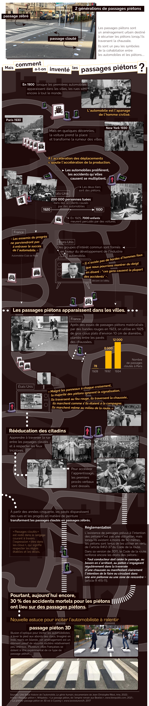
Conception de dispositifs éducatifs ou de médiation culturelle scientifique et technique
Outils de médiation scientifique & technique
Paroles d'eau
Atelier pour l'Éco-parlement des écoliers de la ville de Saint-Denis
À partir des mots du lexique de l'eau qu'ils avaient depuis les ateliers précédents, les enfants choisissent un message qu'ils mettent en forme pour le partager. Les affiches au format raisin comportent une ouverture conçue pour qu'ils posent en intégrant leur visage au sein du message, qu'ils incarnent, et deviennent Porteurs de parole d'eau…
Savez-vous que le corps humain est composé à 70 % d’eau ?
Atelier de 1h30, organisé dans 14 classes (CE2, CM1 et CM2), du 24.03.2014 au 08.04.2014
Échanges et suivi avec le Pôle Environnement de la ville de Saint-Denis
Conception des propositions et réalisation de l'option retenue :
• méthodologie
• réalisation des supports
• animation des ateliers
• finalisation (sélection, retouches et préparation pour impression…)
CEIDF et la Ville de Saint-Denis, 2014
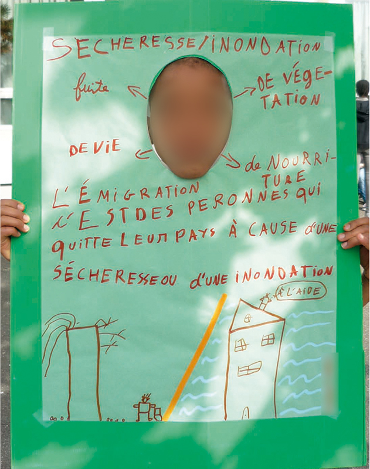
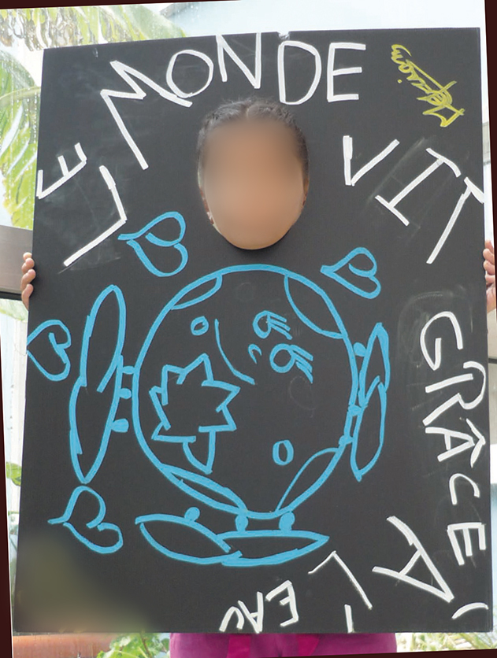
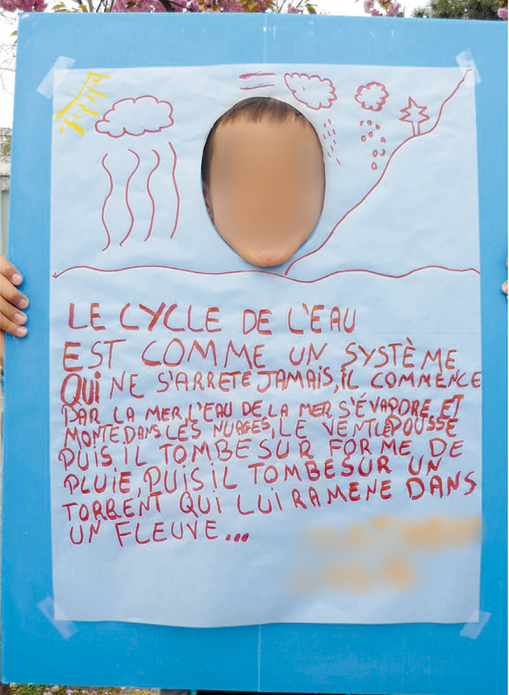
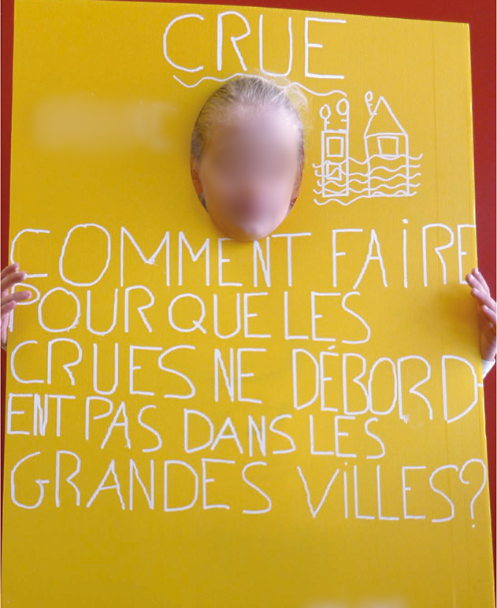
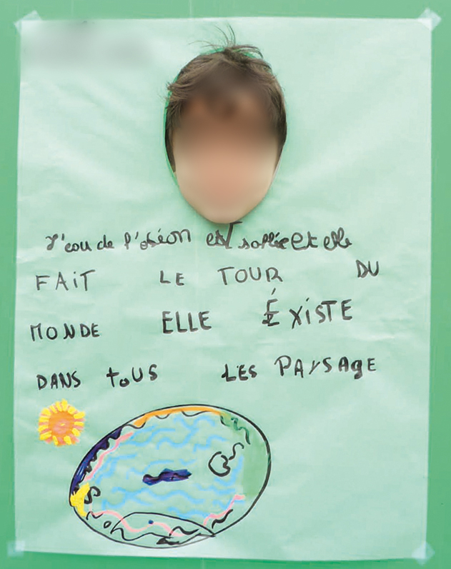
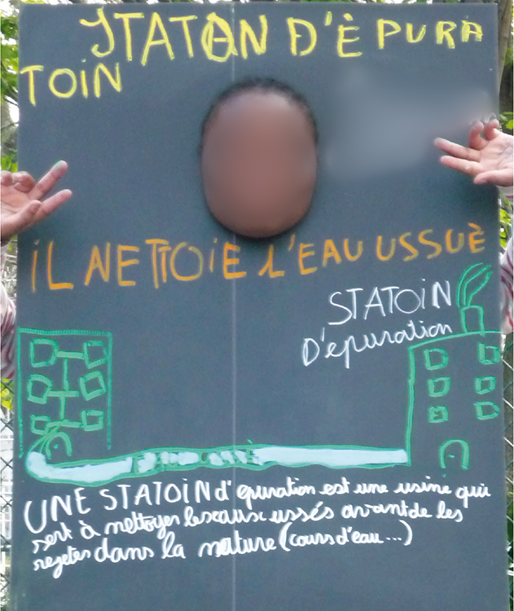
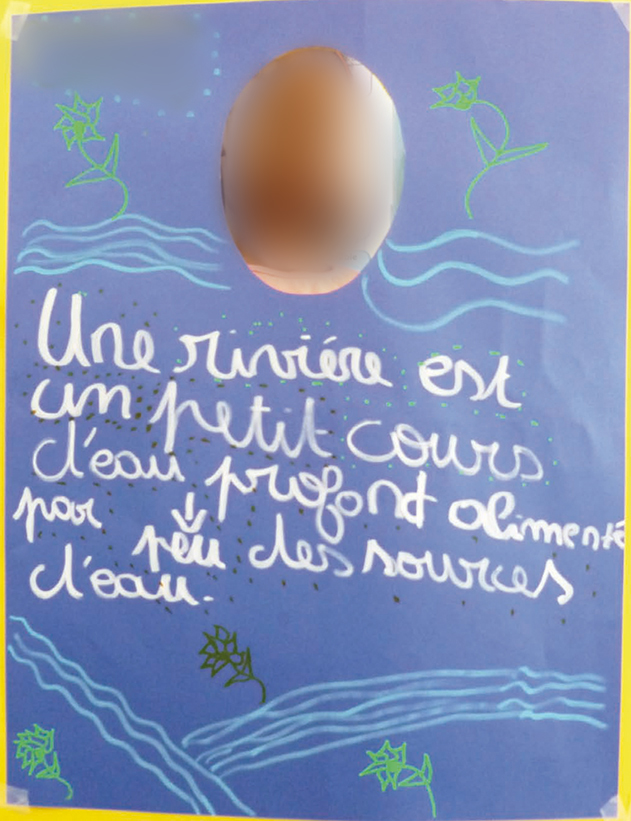
Porteur de parole → rendu final photographique
Réalisation des photos : mise en scène du message et de son porteur. Les élèves sont encouragés à accompagner leur message en jouant avec l'expression de leur visage pour valoriser les mots portés.
Ce rendu permet de personnaliser les paroles d'eau en leur donnant un visage : le message est ainsi plus sensible, et l’impact de communication plus fort.
Les photos des affiches et de leurs porteurs ont été exposées lors de la Fête des Tulipes (mi-avril 2014), et à la fête de fin d’année dans les écoles.
Contexte
Depuis plusieurs années, la ville de Saint-Denis organise l’Éco-parlement des écoliers, un dispositif d’éducation à l’environnement se déroulant sur une année scolaire ayant pour objectif de contribuer à la compréhension des enjeux environnementaux pour que les enfants puissent agir en citoyens responsables. Ce projet est piloté par le Pôle environnement, en partenariat avec la direction de l’enseignement de la Ville de Saint-Denis et l’Inspection Académique de la Seine-Saint-Denis.
Sur l’année scolaire 2013-2014, l’Éco-parlement des écoliers a mobilisé 14 classes du CE2 au CM2 sur le thème de l’eau. Plusieurs associations se sont succédées pour des interventions en classe, dont la Coordination Eau IdF, où j’occupais le poste de chargée de projets Jeunesse. L’atelier étant le dernier de l’année, j’ai proposé un atelier de réalisation d’outils de sensibilisation pour que les élèves partagent leurs connaissances acquises au cours de l’année. Plusieurs options furent présentées (Parole d’affiche, Conte urbain et Quiz d’eau) et, en concertation avec la responsable du Pôle environnement de la ville et compte tenu des durées d’atelier, la première option fut retenue (mais avec la commande du jeu de Cartes à conter l’eau prévu pour l’atelier de conte urbain, remis aux enseignants pour un usage ultérieur). Il s’agissait donc de reprendre les connaissances et témoignages des enfants, en les mettant en forme via la création de supports de communication, en suivant une méthodologie balisée.
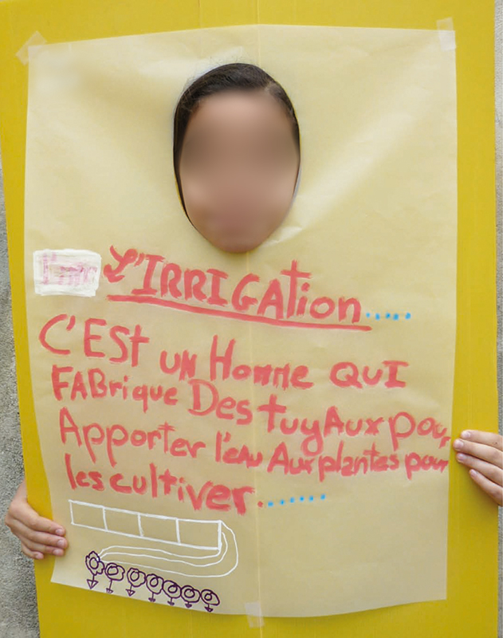
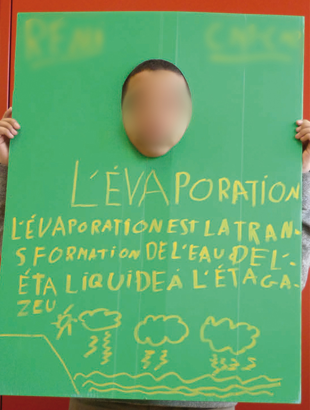
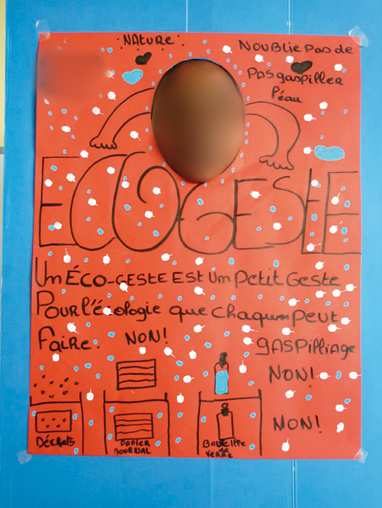
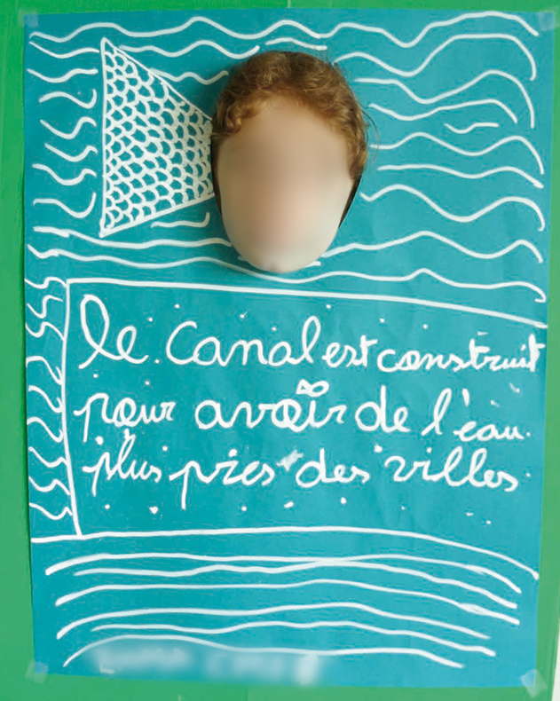
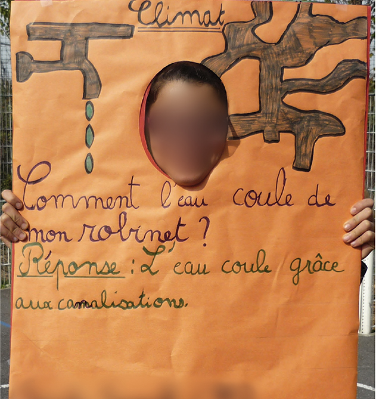
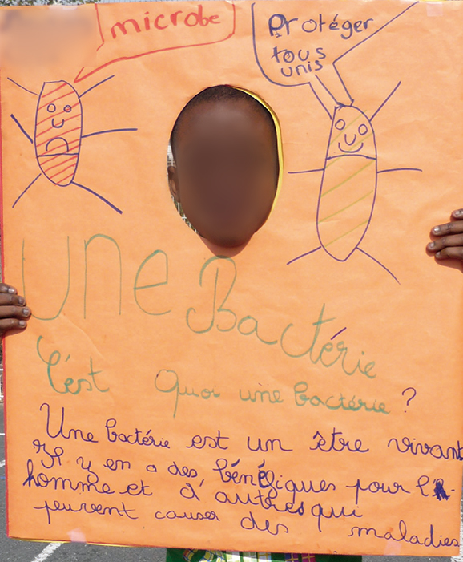
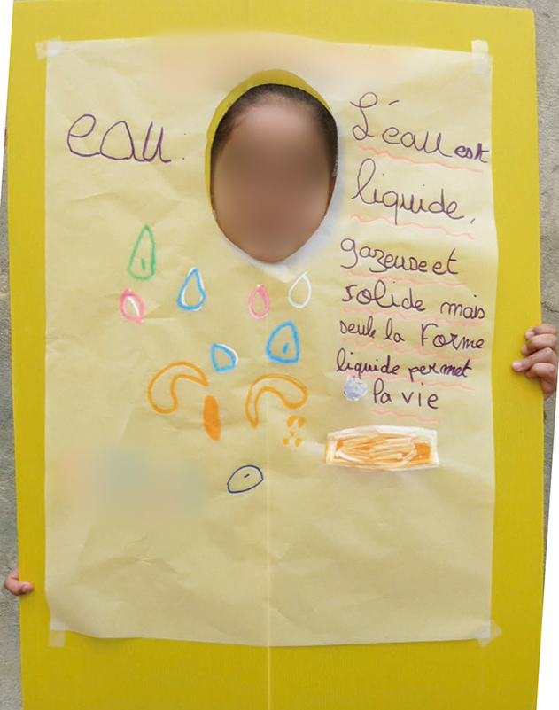
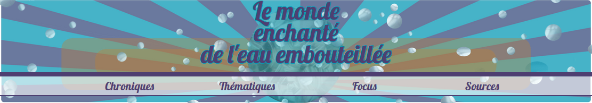
Présentation lors de la soirée-débat « L'eau, bien public », organisée à l’occasion de la journée mondiale de l’eau par Eau de Paris • 22.03.2016 au Pavillon de l’Eau, Paris
Avec la participation de Célia Blauel, Présidente d’Eau de Paris et Adjointe à la Maire de Paris, Maude Barlow, Présidente nationale du Conseil des Canadiens, du conseil de Food and Water Watch de Washington et initiatrice du projet des Communautés bleues, Sylvain Tanguy, vice-président de la Communauté d’Agglomérations Cœur d’Essonne en charge de l’eau et de l’assainissement et Julie Morineau, réalisatrice du projet LeMeeb
Outil d'information et de sensibilisation
Lorsque l'histoire du marketing de l'eau en bouteille croise les aspects financiers, environnementaux et législatifs de ce secteur de marché, ce mode de consommation se décrit peu à peu comme un portrait du monde vu à travers le prisme de l'eau que nous buvons… Pour le meilleur et pour le pire.
Le Monde Enchanté de l’Eau en Bouteille – LeMeeb –
Projet de fin de formation Développeur d’application multimédia – DAM – conçu en utilisant les outils d’une approche marketing pour concevoir un site d’information et de sensibilisation.
Avec le soutien de h2o.net
2015 • en ligne pendant 6 ans
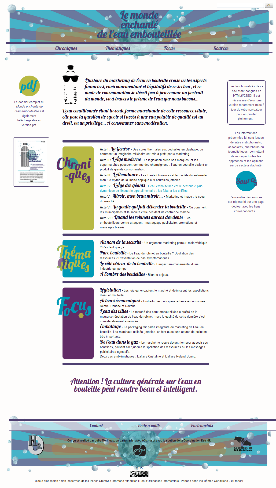
Le Monde enchanté de l’eau embouteillée est un outil de sensibilisation, plateforme de présentation des publications de l’ensemble des secteurs d’activité ou d’étude concernés par le marché de l’eau en bouteille, au croisement des thématiques d’approche.
Nous pouvons ainsi suivre l’évolution des mentalités dans une société changeante à travers le fil rouge de l’histoire des modes et du marketing, que croisent les enjeux environnementaux, sociétaux et financiers de ce secteur de marché, le plus dynamique de l’agro-alimentaire mondial…
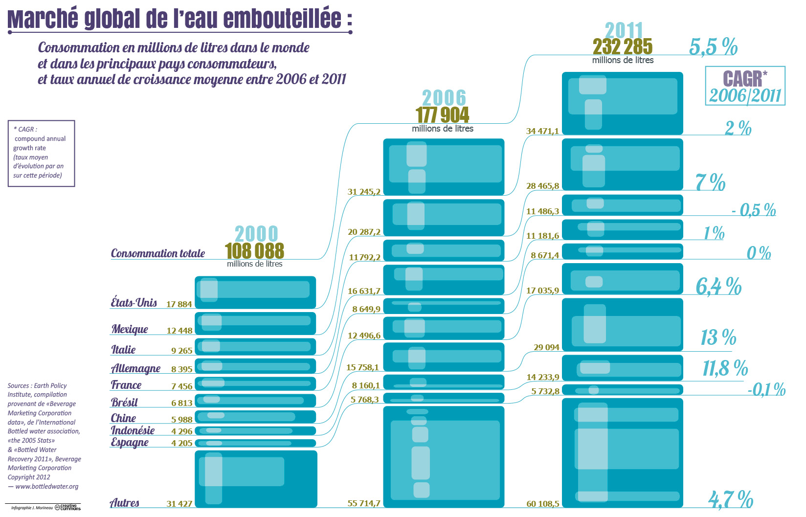
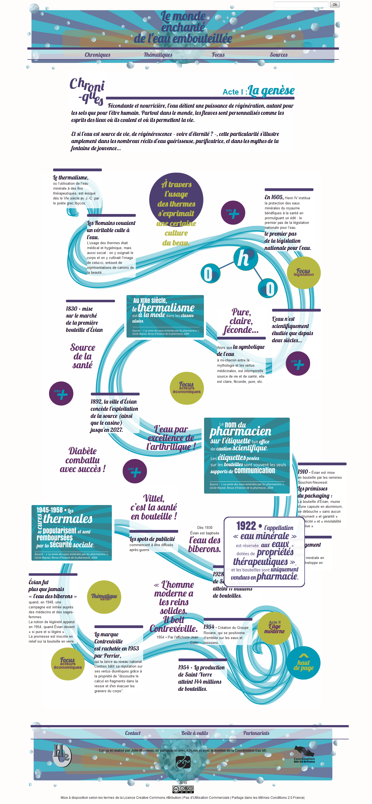
Réaliser un outil de sensibilisation implique certaines contraites, dont celle de présenter les sources des informations présentées. Il est important d'être transparent à ce sujet, car l'accès aux sources participe de la qualité de lecture et de la confiance accordée aux informations.
C'est pourquoi LeMeeb comportait une pleine page dédiée aux sources, listées et organisées par catégories.
L’eau est-elle une marchandise comme les autres ?
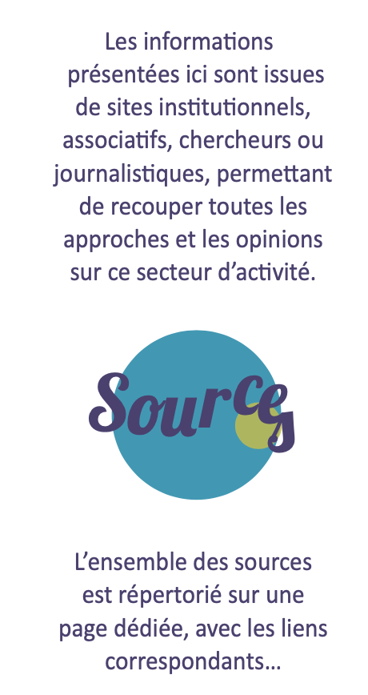
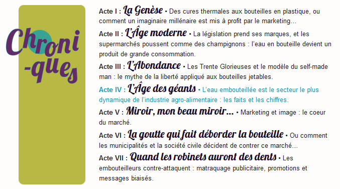
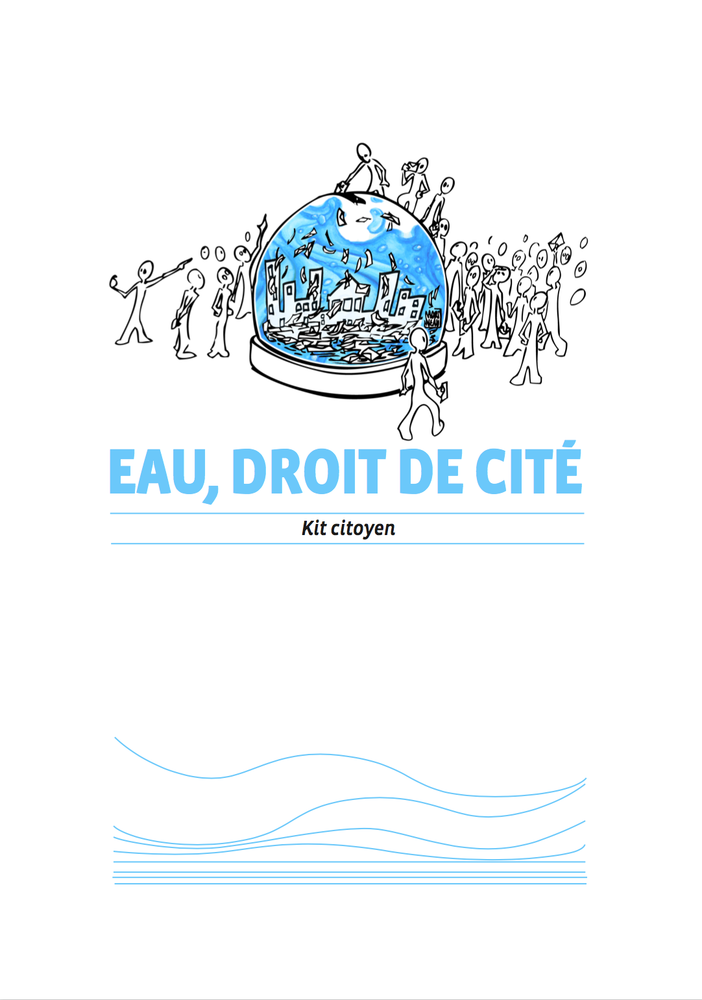
Eau, droit de cité
Organiser et piloter une rédaction collaborative
Le kit citoyen Eau, droit de cité est le fruit de plusieurs contributions de militants et associations : mêlant voix militantes et documentation rigoureuse, ce document conçu dans une démarche collaborative a vocation à replacer l’eau, bien commun, au cœur de la campagne pour les élections municipales.
Kit citoyen pour les Municipales
Eau, droit de cité offre ainsi une vision d’ensemble des problématiques de l'eau à l'échelle des municipalités, des possibilités concrètes d’action et des politiques vertueuses existantes.
Cette brochure avait, initialement, été conçue afin de présenter les 15 propositions élaborées par les associations et les militants engagés en faveur de l’eau bien commun et du droit humain à l’eau afin de mettre les problématiques de l’eau au cœur de la campagne pour les élections municipales de mars 2014. Ces propositions sont toujours aussi pertinentes et d'actualité : la gestion et la distribution de l’eau relève, de fait, de la compétence des communes et des intercommunalités..
Chacune de ces 15 propositions est accompagnée d'une documentation fournie et d'exemples de bonnes pratiques, assortis des liens et ressources pour aller plus loin.
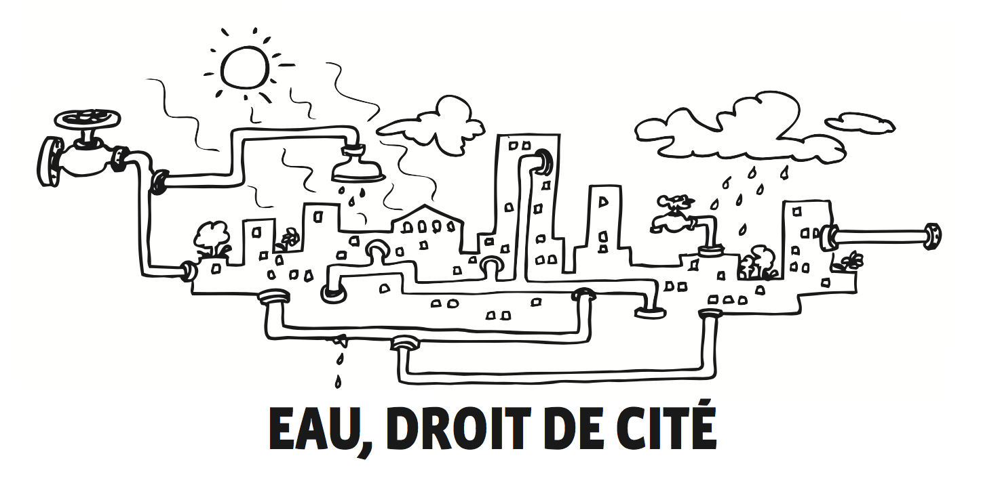
Pilotage du comité de lecture, coordination des contributions
Conception éditoriale
Documentation, sélection des infos et rédaction de certaines propositions
Homogénéisation éditoriale et rédactionnelle
Vérification des sources
Maquette et illustration
Coordination Eau IdF, 2014
www.water-words.net
L’encyclopédie de l’eau participative pour les juniors
Water-words est un projet initié et conçu par Martine Le Bec, fondatrice du magazine www.h2o.net.
Web design
Identité graphique
Documentation, conception et réalisation des infographies thématiques
H2o.net, 2016
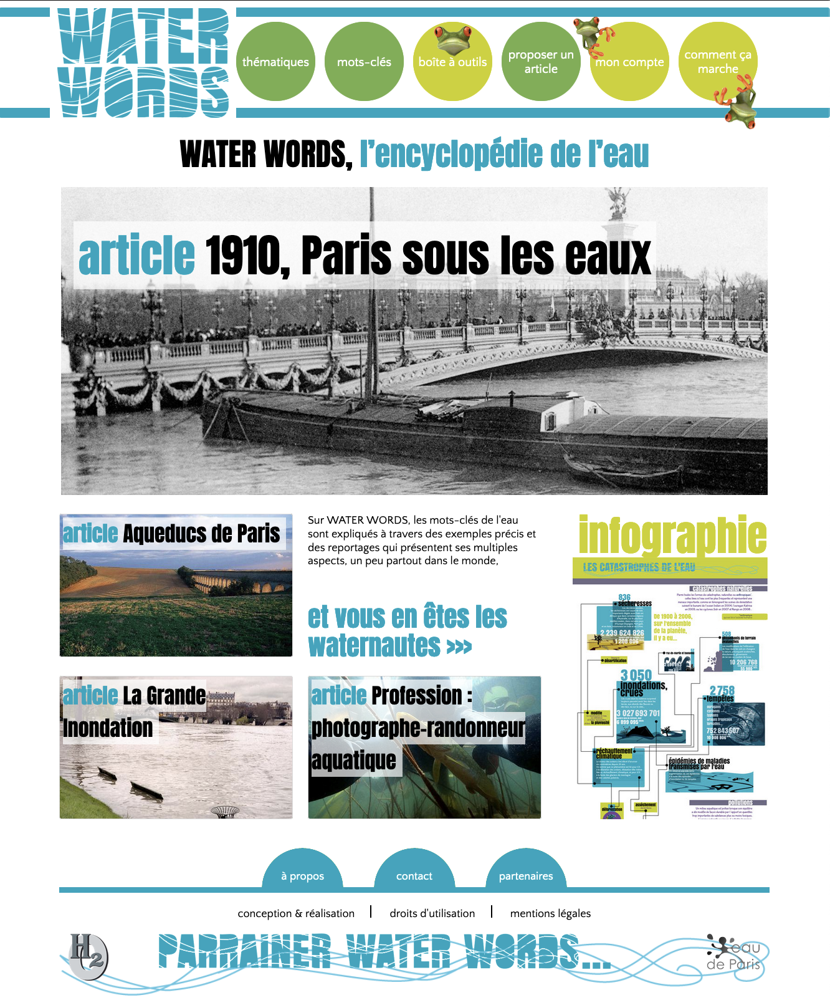
Sur Water-words, les mots-clés de l'eau sont expliqués à travers des exemples précis et des reportages qui présentent ses multiples aspects, un peu partout dans le monde, et vous en êtes les Waternautes…
L’enfant qui aura, avec succès,
exploré et défini un mot clé de l’eau
aura à jamais un autre regard sur l’eau.
Martine Le Bec

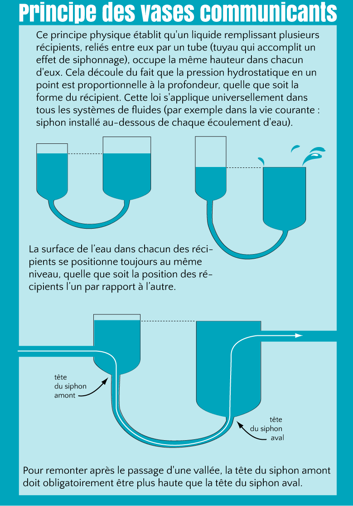

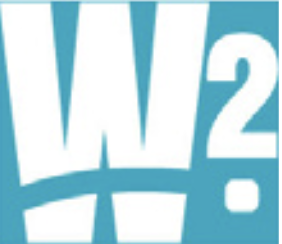
L’objet du projet est de réunir des adolescents des cinq continents sur un projet commun et interactif autour de l’eau, en les invitant à publier les reportages qu’ils réalisent, seuls ou collectivement… Water-words valorise ainsi la diversité des perceptions, en mettant en perspective des différentes cultures et rapports à l’eau, il stimule le partage des connaissances et l’appréhension globale du sujet.
Chaque thématique est définie par une série de mots-clés donnant accès à différents articles et ressources, et les mots-clés peuvent également servir de passerelles entre les différentes thématiques de l’eau.

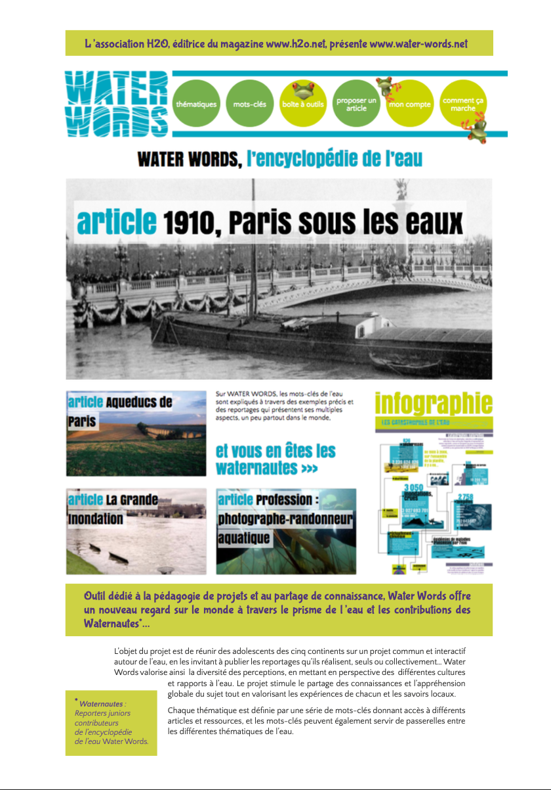
Cette version pilote du Water-words a été réalisée avec le concours financier d'Eau de Paris, obtenu dans le cadre d’un appel à projets « Partenariat associatif ».
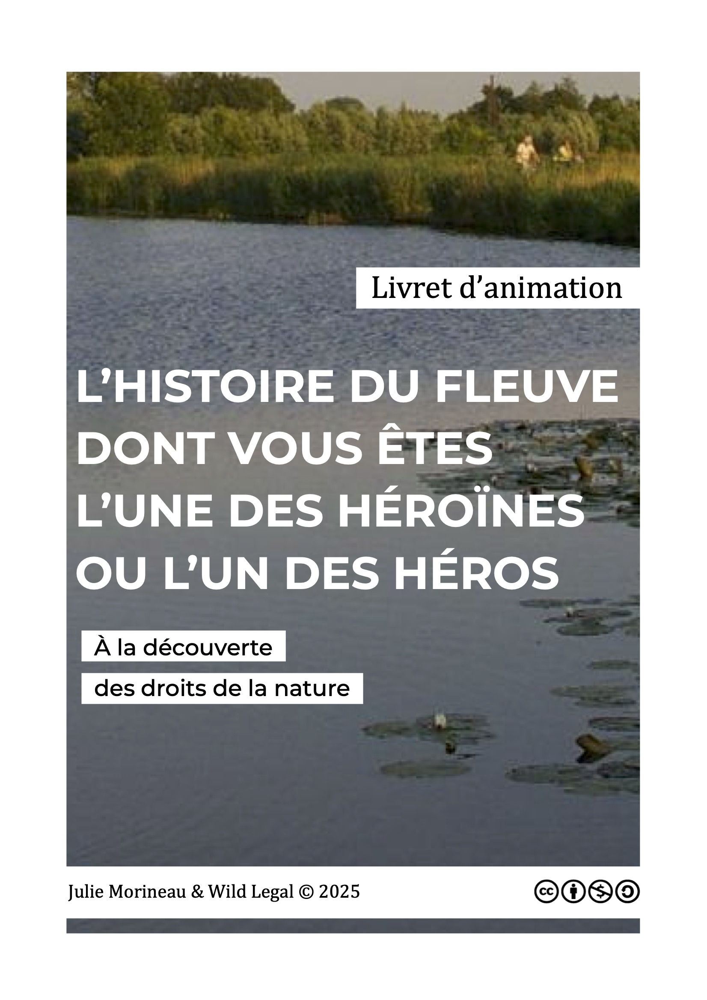
Projet réalisé pour l'association WildLegal • Mars-mai 2025
Documentation, conception, création du récit interactif, illustrations, réalisation de l'ensemble du dispositif et coordination, avec l'aimable participation d'Hugo Murias – Coordination & gestion de projets associatifs – et Gaël Defins – Chargé de projet juridique & expérimentations – chez WildLegal
L'histoire du fleuve dont vous êtes
l'une des héroïnes ou l'un des héros
À la découverte des droits de la Nature
Ce parcours narratif et collectif permet de co-construire un récit au cours duquel les participants explorent les possibilités d’action pour défendre le bon état écologique d’un fleuve, de la pétition en ligne aux recours en justice, en passant par les outils de démocratie participative et les actions culturelles… Ce récit sera ponctué, selon les étapes, d’exemples mis en contexte et de réflexions associées.
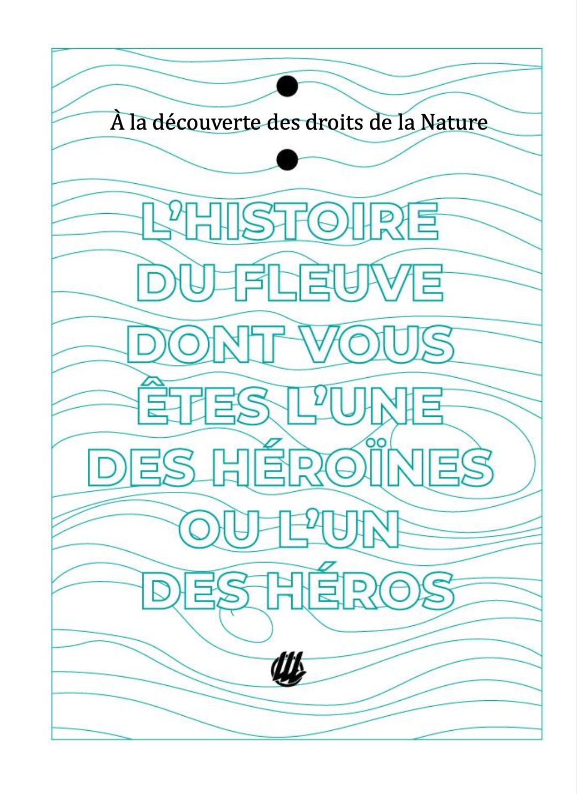
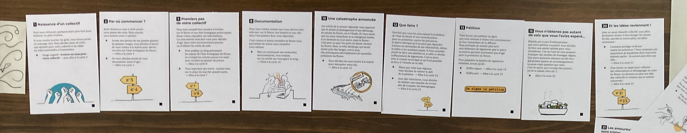
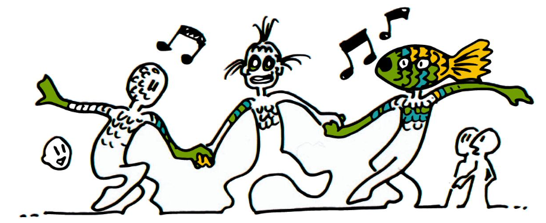
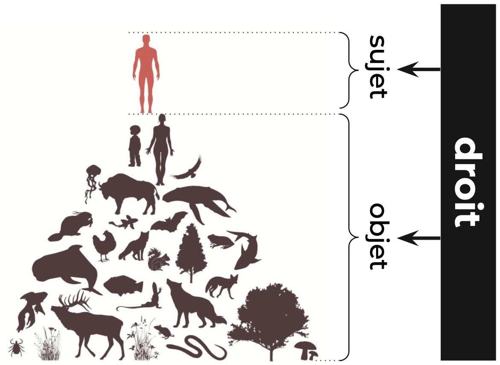
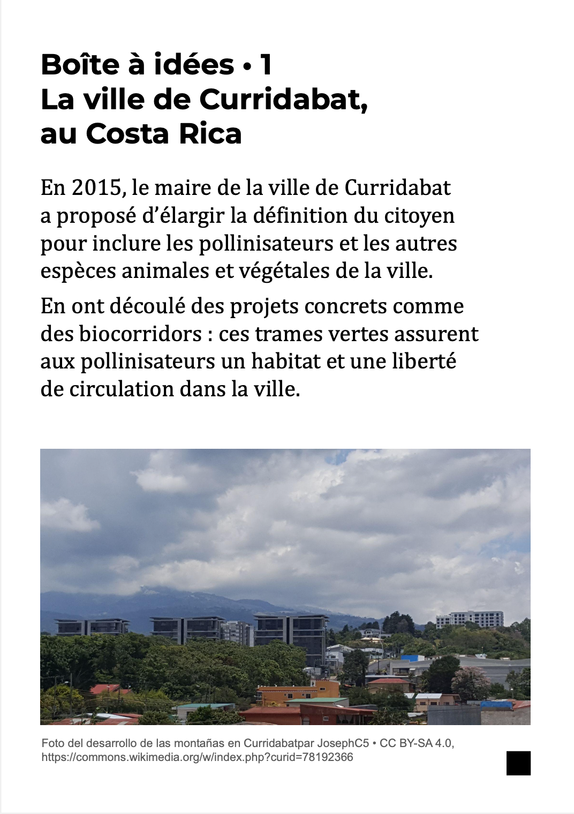
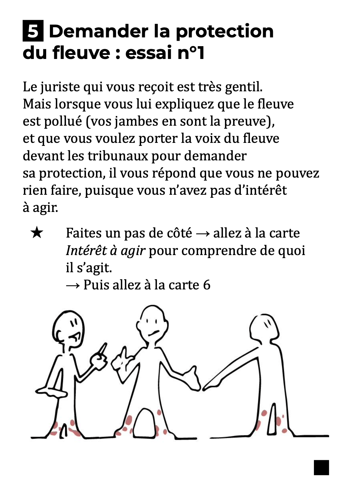
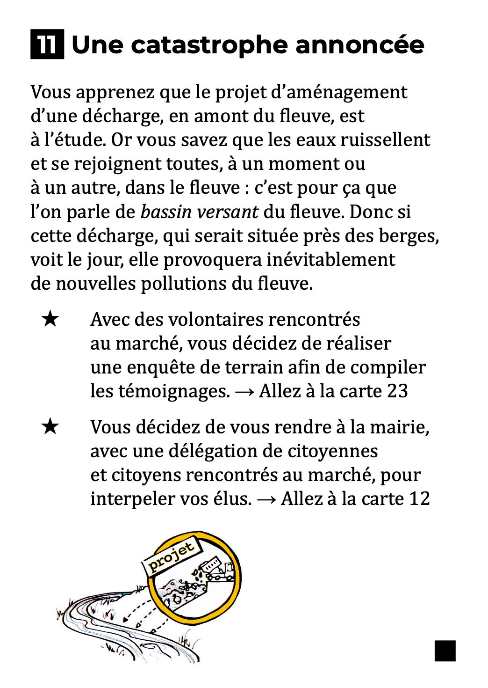
Le dispositif prend la forme d’un jeu de cartes à histoire numérotées, à mi-chemin entre le livre dont on est le héros et la fresque, collective. L’animateur invite les joueurs à lire chacun leur tour la carte d’une étape. Sur chaque carte est indiquée l’étape qui va suivre, ou les choix qui s'offrent à l'équipe. Chaque carte lue est déposée à la suite de la précédente sur la table, visible, pour suivre le fil de l’histoire. Les cartes Pas de côté sont également posées sur la table lorsqu’elles ont été jouées.
« Lorsque, en tant que scientifique, vous imposez l’idée d’une continuité du vivant et mettez en évidence des modes de sensibilité, de perception ou d’intelligence des mondes animal et végétal, vous fournissez une base scientifique non contestée à une façon totalement renouvelée de traiter juridiquement les êtres vivants non humains. »
Interview de Marie-Angèle Hermitte (juriste, directrice de recherche honoraire au CNRS et directrice d’études honoraire à l’EHESS), dans « La nature au tribunal », Laura Martin-Meyer, Sésame n°11, mai 2022
Matériel
Le jeu de 71 cartes à histoire, les 20 cartes compléments (dont 2 à reconstituer) et les 2 documents à donner aux joueurs en cours d’étape (Déclaration des droits du fleuve et Le droit traduit…), les cartes émojis et les cartes schéma binaire, 1 dé, quelques feutres, ainsi qu’une (ou 2) feuille(s) de papier…
Le livret d’animation clé-en-main explique le déroulé de l’atelier étape par étape : mode d’emploi de L’histoire du fleuve…, mais aussi début d’atelier – activité pour « briser la glace » (icebreaker) afin de permettre à tous les participants de se présenter dans un format ludique + présentation rapide des droits de la Nature –, les étapes de l’histoire pour lesquelles une intervention de l’animateur est nécessaire, ainsi que des compléments d’informations pour maîtriser les exemples concrets qui sont présentés en cours d’histoire et être en mesure de répondre aux questions annexes susceptibles de se présenter en cours d’atelier (les droits des animaux, les réserves naturelles, ce que signifie “personnalité juridique”, etc.)
Un Mémo-droits-de-la-Nature.pdf (3 pages) est également prévu pour être envoyé aux participants à la suite de l’atelier (en même temps que le lien vers le questionnaire d’évaluation).
L’intégralité du matériel du dispositif est téléchargeable en pdf, à l’exception du dé, des feuilles de papier et des feutres. Un mode d’emploi explicatif pour l’impression et la découpe des éléments est également joint dans le kit pdf.
Le livret d’animation
Comme dans tout atelier de type fresque, les étapes s’accompagnent d’échanges entre les participants, guidés par l’animateur. Il était important, dans le cadre de ce projet, d’offrir un outil clé-en-main complet pour que l’animateur ait non seulement les outils, mais également toutes les infor- mations nécessaires pour animer l’atelier : c’est l’objectif du livret d’animation.
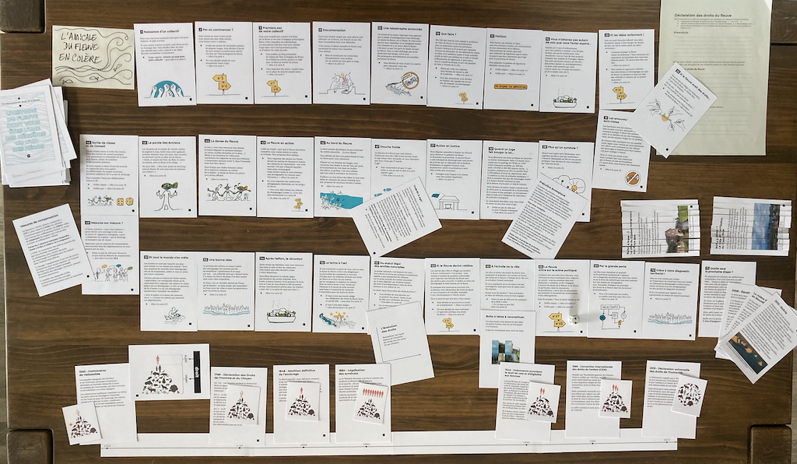